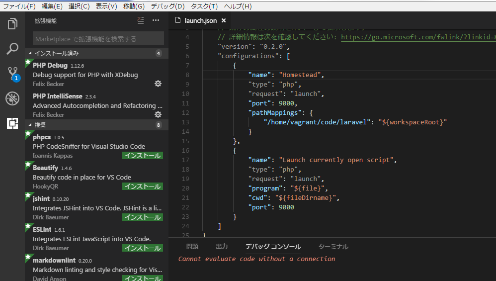

概要
VSCode + vagrant(Homestead) + xdebugでphpのデバッグ環境を作る
前提
・vscodeがインストールされていること
・vagrantがインストールされていること
・homesteadを利用してlaravelの環境構築が完了していること
手順
vagrant立ち上げ
vagrant up
vagrant ssh
xdebug.ini修正
sudo vi /etc/php/7.2/fpm/conf.d/20-xdebug.ini
下記内容に修正
zend_extension=xdebug.so
xdebug.remote_enable = 1
#xdebug.remote_connect_back = 1
xdebug.remote_port = 9000
#xdebug.max_nesting_level = 512
xdebug.remote_host=10.0.2.2
xdebug.remote_autostart = 1
念のためリロード
vagrant reload
VSCode設定
php debugインストール
拡張機能から「php debug」をインストール

launch.json変更
※pathMappingsについては環境に合わせて適宜変更
"configurations": [
{
"name": "Homestead",
"type": "php",
"request": "launch",
"port": 9000,
"pathMappings": {
"/home/vagrant/code/laravel": "${workspaceRoot}"
}
},
{
"name": "Launch currently open script",
"type": "php",
"request": "launch",
"program": "${file}",
"cwd": "${fileDirname}",
"port": 9000
}
]